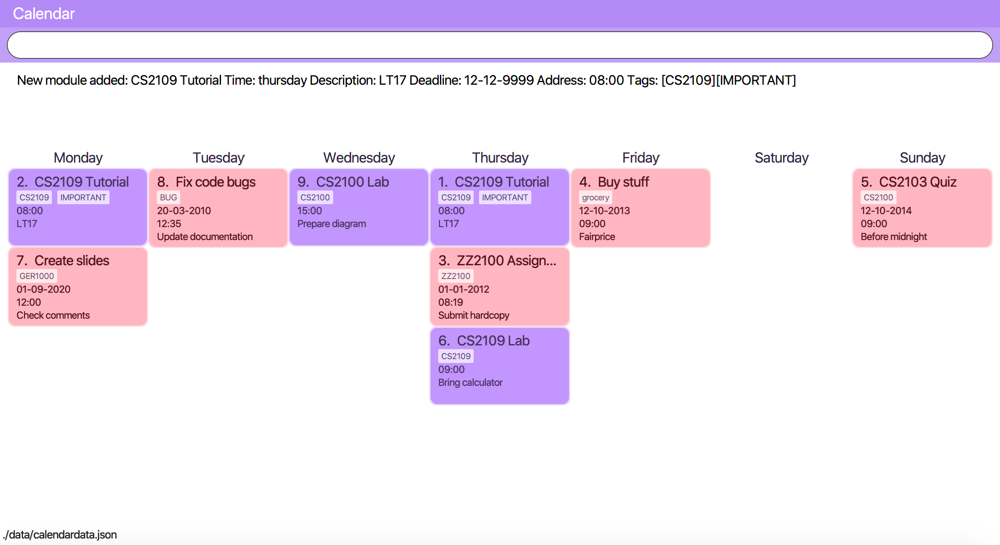

By: Team T16-2 Since: September 2019 Licence: MIT
1. Introduction
Modulo is a desktop application helping National University of Singapore (NUS) students to audit their academics, finances and schedule their time as they try their best to survive yet another semester of college. Those who prefer to work with a Command Line Interface (CLI) might find using Modulo to be more straightforward than the usual Graphical User Interface (GUI) applications. The application has the visual benefits of a GUI but stands strongly rooted in command line usage. Modulo does not require an internet connection to run so there’s no worry when the school wifi goes MIA yet again. The only time you need to be connected is at the start, when downloading the application. Look to Section 2, “Quick Start” to find out how to get started on Modulo!
2. Quick Start
-
Make sure that
Java 11or above is installed in your computer. Otherwise, you can download Java 11 here.-
Enter the follow command in Command Prompt for Windows or Terminal on Mac to check your current version of Java:
java --version
-
-
Download the latest
modulo.jarhere. -
Copy the
.jarfile to a folder you wish to set as your working directory for the application. -
Double-click the file to start Modulo. If the GUI does not appear in a few seconds, please try running
java -jar modulo.jarin your command prompt or terminal. -
Type the command in the command box and press Enter to execute it.
e.g. typinghelpand pressing Enter will show a list of commands which Modulo supports. -
Some example commands you can try:
-
add CS2100 Assignment 1 t\21 August 2019 #High-Priority: adds a task with descriptionCS2100 Assignment 1to the Modulo. -
add CS2103 1920S1: adds moduleCS2103to academic year and semester1920S1 -
add [qns] What can one catch that is not thrown? [type] normal [ans] A cold [cat] CS2131: adds a new quiz question to categoryCS2131 -
exit: exits the app
-
-
Refer to Section 3, “Features” for details of each command.
3. Features
Command Format
-
Words in
UPPER_CASEare the parameters to be supplied by the user e.g. inadd n/NAME,NAMEis a parameter which can be used asadd n/John Doe. -
Items in square brackets are optional e.g
n/NAME [t/TAG]can be used asn/John Doe t/friendor asn/John Doe. -
Items with
… after them can be used multiple times including zero times e.g.[t/TAG]…can be used ast/friend,t/friend t/familyetc. -
Parameters can be in any order e.g. if the command specifies
n/NAME p/PHONE_NUMBER,p/PHONE_NUMBER n/NAMEis also acceptable.
3.1. Common commands
3.1.1. To view a list of commands and help
Format: help
3.1.3. Switch to another feature’s tab
Format: switch FEATURE_NAME
Example: switch module
3.1.4. Exiting the program
Exits the program.
Format: exit
3.2. Calendar
Calendar displays a weekly list of tasks and modules which the user has added. To enter the Calendar section
please enter the command: switch calendar.
3.2.1. Add a new task: add
Adds a new Task. TaskTitle and TaskDay are compulsory while the other fields are optional.
The fields consist of:
- TaskTitle The name of the task. Prefix: <title>
- TaskDay The time when the user plan to do the task. Prefix: <day>.
- TaskDescription Additional description of the Task. Prefix: <desc>.
- TaskDeadline When the task is due. Prefix: <deadline>.
- TaskTime Where time when the task occurs, in HH:mm 24-hour format. Prefix: <time>.
- TAG Tag that can be used to sort the tasks. Prefix: <tag>.
More than one TAG can be added to each task, e.g. <tag> High-Priority <tag>Math
Format: add <title>TITLE <day>DAY <desc>DESCRIPTION <deadline>DEADLINE <time>TIME [<tag>TAG]
e.g. add <title>CS2109 Lab 10 <day>tuesday <desc>Submit code through LumiNUS <deadline>21-10-2019
<time>13:00 <tag>IMPORTANT
3.2.2. Edit existing task: edit
Edit one or multiple fields of an existing task. INDEX should be a positive integer.
Format: edit INDEX [<title>TITLE] [<day>DAY] [<desc>DESCRIPTION] [<deadline>DEADLINE] [<time>TIME] [<tag>TAG]
e.g. 1 <title>CS2108 Assignment <day>friday
3.2.4. Sort tasks: sort
Change the order of the tasks. Use sort timeadded to sort the tasks according to when the Task was added to the
calendar and use sort deadline to sort the task according to TaskDeadline with the Task with the earliest
deadline to be listed first. The default sorting method is by time added.
Format: sort SORT_TYPE
e.g. sort deadline
3.2.5. Change week: next and previous
Go to either the next or previous week.
Format: next or previous
3.2.6. Add module: addmod
Add module with the specified MODULE_CODE to the timetable. After entering the command, user will be prompted to input
additional information about its lecture, tutorial, recitation, and lab slots.
Format: addmod MODULE_CODE
e.g. addmod CS2103
3.2.7. Edit module: editmod
Update an existing module. After entering the command, user will be prompted to input additional information depending
on the TYPE.
Format: editmod MODULE_CODE TYPE
e.g. editmod CS2103 lecture
3.2.8. Delete module from timetable: deletemod
Delete an existing module.
Format: deletemod MODULE_CODE
e.g. deletemod CS2103
3.2.9. Clear data: clear
Delete all information of the tasks and modules of the current week (the week that is currently displayed).
Format: reset
3.3. Modules
To enter the Module section please enter the command: cap
3.3.1. Sort the modules : sort
Sorting allows users to view their historical grades based on a few different arrangements. The few order types are: sorting by grades, time, mc and title.
Format: sort ORDER_TYPE
e.g. sort grade
3.3.2. Add all modules in the current calendar to record : `integrate'
The user can add all existing modules in the calendar into the records by specifying the semester to add. After the modules are added to the records, the grades are left blank. The user can subsequently choose to add the grades and other details.
Format: integrate YEAR_AND_SEMESTER
e.g. integrate 1920S1
3.3.3. Manually add module to record : add
The user can add new modules to the a specific semester, even for future semesters.
Format: add MODULE_CODE YEAR_AND_SEMESTER
e.g. add CS2103 1920S1
3.3.4. Delete module from record : delete
Delete a specific module from one of the selected semester.
Format: delete MODULE_CODE YEAR_AND_SEMESTER
e.g. delete CS2103 1920S1
3.3.5. Edit details of a module : edit
Edit the record of a module including specifications such as CAP and MC.
Format: edit MODULE_CODE YEAR_AND_SEMESTER
e.g. edit CS2103 1920S1
3.3.6. Locating module by module code or title : find
Finds the module with the module code or any module that contains the keyword entered by the user.
The search is case insensitive. e.g. cs1010s matches CS1010S
The search method adopts the inclusive OR search method that returns any sub-keywords associated with the keyword.
e.g. searching for prog meth will return Programming Methodology I, Programming Methodology II, Web Programming and Applications.
Format: find MODULE_CODE [MORE_KEYWORDS]
e.g. find CS1010S, find Programming Methodology I
3.3.7. Clear all modules in a specific semester or clean-slate all records : clear
Deletes all modules in the record or delete all modules in a semester. The user can avoid clearing modules one-by-one when large number of modules have to be cleared.
When the only single keyword clear is entered, Modulo would recognise it as a command to clear all the modules. As the action is not reversible, a notification would prompt the user to confirm this non-reversible action.
Format: clear [YEAR_AND_SEMESTER]
e.g. clear 1920S2
3.3.8. Apply a certain grade to a specific module : make
Applies a specified grade to a the specified module. This allows the user to experiment with future grades and set goals towards his/her graduation. This command allows the user to avoid the hustle of editing score through the edit command. This is a single command that changes the grade of a module instantaneously. It supports the Satisfactory / Unsatisfactory grades annotated as S and U respectively.
Format: make MODULE_CODE GRADE
e.g. make CS1010S A, make CS2103 A, make CS2103 S
3.3.9. Change graduation requirement : grad
The user can change the graduation by entering this command.
Format: grad
e.g. grad
3.3.10. Password protection [Coming in V2.0]
Prevent unauthorised access to your grades.
3.4. Quiz
To enter the Quiz section please enter the command: switch quiz
3.4.1. Add the details of the quiz questions:
Users can add new quiz questions with the details in it. The details of the question should be added with the following requirements.
The keyword instructions of the question include:
- <qns> Indicate that the next several phrases will be the name of the question.
- <ans> Indicate that the next several phrases will be the answer to the question.
- <cat> Indicate that the next several phrases will be the category of the question.
- <type> Indicate that the next several phrases will be the priority/importance level of the question.
- <tag> Indicate that the next several phrases will be the customized tag of the question.
The details instructions after the keyword of the question:
- <qns> are required. The word limit is 200.
- <ans> are required. The word limit is 1500.
- <cat> are optional. The word limit is 10.
- <type> are optional. The format after this command should only be: high, normal, low.
- <tag> are optional. To add numerous tags, please include <tag> keyword to differentiate one tag from another.
Format: add <qns> your_question <ans> your_answer <cat> your_category <type> your_priority
<tag> your_tag
Example 1:
add <qns> What is always coming, but never arrives? <ans> Tomorrow <type> high <tag> lecture <tag> tutorial
Example 2:
add <qns> What can one catch that is not thrown? <type> normal <ans> A cold <cat> CS2131
Remark (please avoid this):
add <qns> What is <qns>always comi<qns>ng, but never arrives? <ans> Tom<ans>orrow
-
Modulo will detect the question as:
What is <qns>always comi<qns>ng, but never arrives? -
Modulo will detect the answer as:
Tom<ans>orrow
3.4.2. Delete module from record:
Delete a specific quiz question from the group questions.
Format: delete [NUMBER]
Usage: [NUMBER] is the index/row from that category that you want to delete.
Example 1:
delete 1
3.4.3. Edit details of a module : edit
Specify which question you want to edit and modify it from the question list.
Usage:
- [CATEGORY] is the category of the question that you want to edit, case-insensitive. For the question that is uncategorized category, put uncategorized.
- [NUMBER] is the index/row from that category that you want to edit.
The details/instructions of the new questions include:
- <qns> Indicate that the next several phrases will be the name of the question.
- <ans> Indicate that the next several phrases will be the answer to the question.
- <cat> Indicate that the next several phrases will be the category of the question.
- <type> Indicate that the next several phrases will be the priority/importance level of the question.
- <tag> Indicate that the next several phrases will be the customized tag of the question.
Note that at least one of the following must be modified and replaced:
- <qns> word limit is 200.
- <ans> word limit is 1500.
- <cat> word limit is 10.
- <type> format after this command should only be: high, normal, low.
- <tag> are optional. To add numerous tags, please include <tag> keyword to differentiate one tag from another.
Format: edit *[CATEGORY] [NUMBER] [qns] your_new_question [ans] your_new_answer [cat] your_new_category
[type] your_new_priority <tag> your_tag
Example 1:
edit CS2103 1 [qns] How many mammals are there in the universe? [type] low
Remark:
edit CS2103 1 [qns] What is [qns]always comi[qns]ng, but never arrives? [ans] Tom[ans]orrow
Modulo will detect the new question as: What is [qns]always comi[qns]ng, but never arrives? and the answer as: Tom[ans]orrow
3.4.4. Find the quiz questions with keyword:
Find the quiz questions from the list of questions.
Format: find [KEYWORDS]
Format: cancel
3.4.5. Sort based on priority:
Sorting based on priority will help users to identify which questions are deemed to be important to them for each category. Default: sort by time.
Format: sort priority [PRIORITY_TYPE]
Usage: [PRIORITY_TYPE] accepts keyword high, normal, low only
Example: sort priority high
3.5. Finances
To enter the Finances section, please enter the command: switch finance
All amounts are taken to be in SGD and recorded as if with dollar signs and numerals. For example, 110 cents should be written as 1.10 or 1.1.
If dates are to be specified, only dates of format DD-MM-YYYY will be recognised.
3.5.1. Add an expenditure: spend
Record down an entry of spending. By default, the date of spending will be set to the day the entry was added. Otherwise, this can be specified through an optional parameter. Other details regarding the expenditure can also be included.
Format: spend <amt>AMOUNT <day>TRANSACTION_DATE <item>DESCRIPTION <met>TRANSACTION_METHOD <place>PLACE [<cat>CATEGORY]…
e.g. spend <amt>2.80 <day>15-10-2019 <item>Yong Tau Foo <met>Cash <place>Frontier
3.5.2. Add an income: income
Record down an entry of incoming money. Source of income can also be specified.
Format: income <amt>AMOUNT <day>TRANSACTION_DATE <item>DESCRIPTION <met>TRANSACTION_METHOD <from>SOURCE_OF_INCOME [<cat>CATEGORY]…
e.g. income <amt>300 <day>09-08-2019 <item>GST Voucher <met>Bank credit <from>Govt
3.5.3. Add category: add cat [To be implemented]
Add a new category to list of exisiting categories. Note that category name is not case-sensitive.
Format: add cat NEW_CATEGORY
e.g. add cat Hobby
3.5.4. Add an entry of borrowed money: borrow
Record down an entry of money borrowed from someone but not yet repaid. By default, the date the money was borrowed is set to the day the entry was recorded.
Format: borrow <amt>AMOUNT <day>DATE_BORROWED <item>DESCRIPTION <met>TRANSACTION_METHOD <from>PERSON_BORROWED_FROM <deadline>DATE_TO_RETURN_BY [<cat>CATEGORY]…
e.g. borrow <amt>2 <day>09-08-2019 <item>Dilys egg tarts <met>Cash <from>Classmate <deadline>31-12-2019
3.5.5. Add an entry of lent money: lend
Record down an entry of money lent to someone.
Format: lend <amt>AMOUNT <day>DATE_LENT <item>DESCRIPTION <met>TRANSACTION_METHOD <to>PERSON_LENT_TO <deadline>DATE_TO_REMIND [<cat>CATEGORY]…
e.g. lend <amt>1 <day>08-08-2019 <item>HL Choco milk <met>Cash <to>Brother <deadline>12-12-2019
3.5.6. List out finances: list [To be implemented]
List out all entries in recorded down. By default, all entries will be ordered chronologically, according to the day the entry is linked to (e.g. the day of spending etc). Entries are indexed chronologically as well.
To sort or filter, and do more advance searches through the list, additional parameters can be specified.
Attributes that can be sorted by are: day, amt
Attributes that can filtered by are: spend, income, borrow, lend
Format: list [<sort>SORT_TYPE(s)] [<filter>FILTER_TYPE(s)][<find>KEYWORD(S)] [<cat> CATEGORY(s)]
e.g. list <filter>spend <cat>food
3.5.8. Edit an entry: edit [To be implemented]
Edit an entry previously entered by index of entry in listed listed out by list. Note that the newly-entered information will overwrite the details at the attribute. For example, if there were categories food and hobby linked to the entry at index 5 of the list, command edit 5 cat\pet will delete the previous two categories and replace them with a single category pet.
Format: edit INDEX [amt\NEW_AMOUNT] [item\NEW_DESCRIPTION] [cat\NEW_CATEGORY] [place\NEW_PLACE] [met\NEW_METHOD]
e.g. edit 2 amt\5.1
3.5.9. Delete entry/entries: delete [To be implemented]
Delete an entry or multiple entries by their index in the list. Note: the indices do not have to be ordered.
Format: delete INDEX [MORE_INDEXES]
e.g. delete 5 4 1
3.5.10. Show summary of finances: stats [To be implemented]
Shows an overview of the state of expenses and incomes.
Format: stats
3.5.11. Set a budget: budget [To be implemented]
Set a budget, which by default is for the current month. This can be further specified for a specified time period (i.e. duration) or category of spending. A reminder is shown when this budget is about to be exceeded or has exceeded.
Format: budget <amt>AMOUNT [<dur>NUM_DAYS] [<cat>CATEGORY]
e.g. budget <amt>30 <dur>7 <cat>food
3.5.12. Export summary of finances: export [To be implemented]
Exports a file and saves it to hard disk.
Format: export
3.6. Saving the data
Modulo data are saved in the hard disk automatically after any command that changes the data.
There is no need to save manually.
4. FAQ
Q: How do I transfer my data to another Computer?
A: Install the app in the other computer and overwrite the empty data file it creates with the file that contains the data of your previous Modulo folder.
5. Command Summary
-
Add
add n/NAME p/PHONE_NUMBER e/EMAIL a/ADDRESS [t/TAG]…
e.g.add n/James Ho p/22224444 e/jamesho@example.com a/123, Clementi Rd, 1234665 t/friend t/colleague -
Clear :
clear -
Delete :
delete INDEX
e.g.delete 3 -
Edit :
edit INDEX [n/NAME] [p/PHONE_NUMBER] [e/EMAIL] [a/ADDRESS] [t/TAG]…
e.g.edit 2 n/James Lee e/jameslee@example.com -
Find :
find KEYWORD [MORE_KEYWORDS]
e.g.find James Jake -
List :
list -
Help :
help